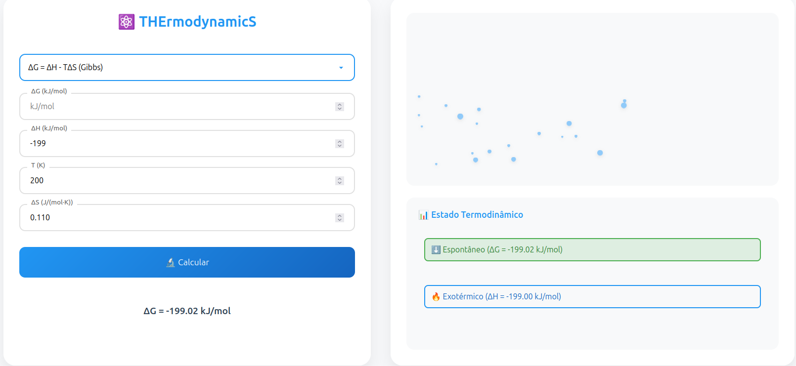

Disclaimer
Oi gente!!! Primeiramente gostaria de pedir desculpas pelo meu sumiço no Jomaserver. Estava em semana de prova, e foi um pouco complicado pra mim conciliar tudo. Inclusive o post de hoje foi uma ferramenta que eu fiz pra facilitar um pouco minha compreensão, sobre o contéudo de biofisíca. Segue o texto:
THErmodynamicS
Então, como eu expliquei no disclaimer THErmodynamicS é uma calculadora de formulas relacionadas a termodinamica, porém além de ser um calculadora de icognita simples ex: (A+B=C), posso variar a formula e achar qualquer uma das variaveis: A, B ou C. Ela também tem uma design simplista mostrando conceitos relevantes como a interpretação de ganho ou perda de trabalho em um sistema. Ou se a reação da variação de energia livre de Gibbs: Δ G = Δ H − T Δ S, é exergonica (espontanea) ou endergonica (não espontanea), aleḿ disso ela interpreta a entalpia fazendo com que eu perceba se a reação catabolizada é endotermica ou exotermica.
Tá, mas por que?
Não sei vocês mas eu aprendo com mais facilidade vendo imagens. Preciso de ver o sistema pra entender melhor, principalmente conceitos matematicos, acredito que biofisica é uma materia perfeita pra entender melhor esses conceitos, então eu fiz pra me ajudar, tanto para treinar programação quanto treinar meu conhecimento em biofísica.
Como foi feito?
Então, basicamente fiz um processo parecido com todos os outros programas que eu fiz até então, são 3 arquivos dentro do meu projeto: Index.html, style.css, e script.js. A parte do front-end, reciclei grande parte de projetos antigos, e adaptei para meu html. e a parte do back-end, eu li sobre calculadoras e explorei alguns repositorios, fazendo com que o processo não fosse tão longo para o resultado alcançado.
APLICAÇÃO: THErmodynamicS
ps: O nome foi escolhido pra abrangir as propiedades, por isso os maiusculos: T (temperatura), H (entalpia), E (energia), S (entropia).